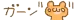
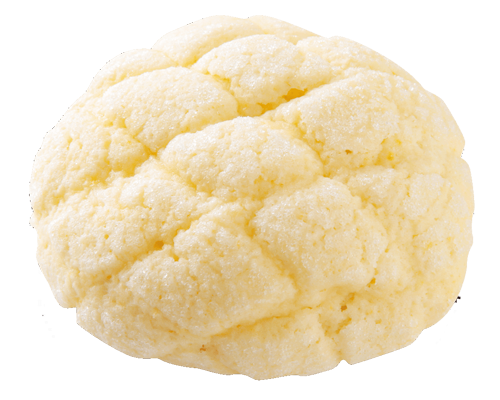
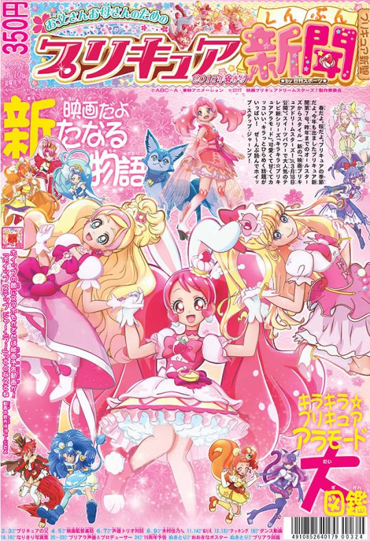
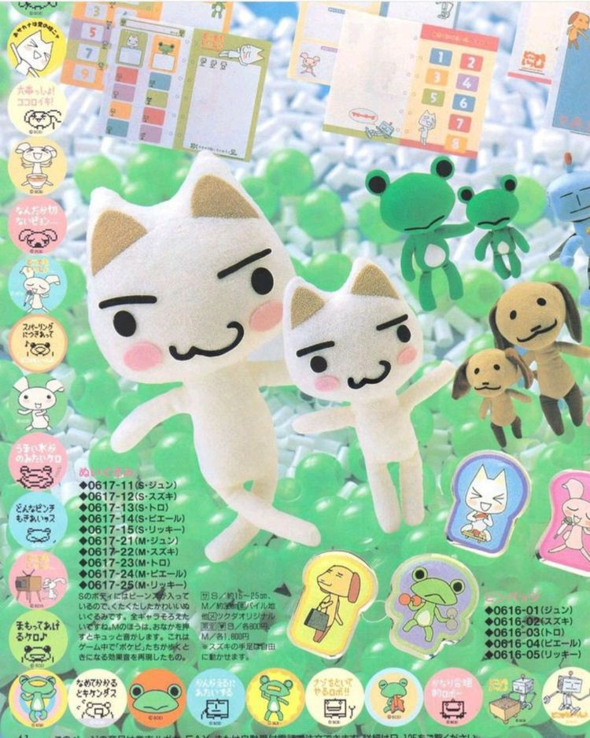
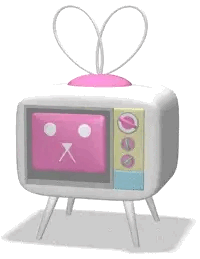

welcome!
.png)
welcome to sugarangel, a personal site! this site was made as a creative outlet for the webmaster to dump a bunch of pretty colors and decorations onto a slice of the web!

this site is best viewed on a 1920 x 1080 screen!

this site is subject to change, as it is constantly being revamped to suit the webmaster's aesthetic choices. make sure to come back every once in a while to see the site grow and develop!

site stats
your visitor number:the webprince is feeling:




update log
2/5/25: minor updates to index and about2/2/25: added blog entry
7/23 - 2/25: hiatus
credits!
inspiration: swirl, pristmatic-realm, hellokittykgirl, hunipyon, taffygraphics: lots of graphics, strawberry pixel bullet
other resources: scripted resources
to-do list!
- make toybox- make shrines
- remake about me and art page
- literally finish the site lmao
This page is protected by a
DOG
A dog's nose print is unique, much like a person's fingerprint.
Want your own? Visit hekate.neocities.org!FAQ (sort of):
A: i had seen a few friends of mine join neocities, and i decided to check it out one day and i fell in love with how creative people are, and how cool the old web is!
A: the site's theme could be considered "webcore," or if u ever owned a DS... it's kinda inspired by pictochat lmao. im not sure what term to use rn but i love stuff like san-x, q-lia, and different styles of harajuku, japanese street fashion, and it's subcultures. (think gyaru, lolita, etc.) those could be the general theme of the site.
A: around three years but i took a long hiatus in the middle.